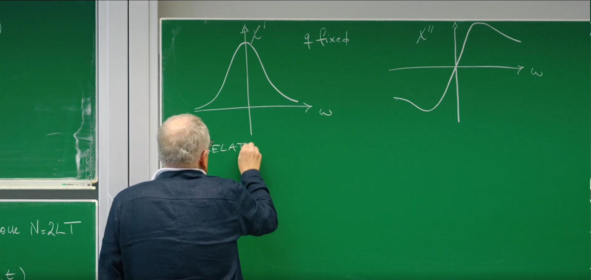
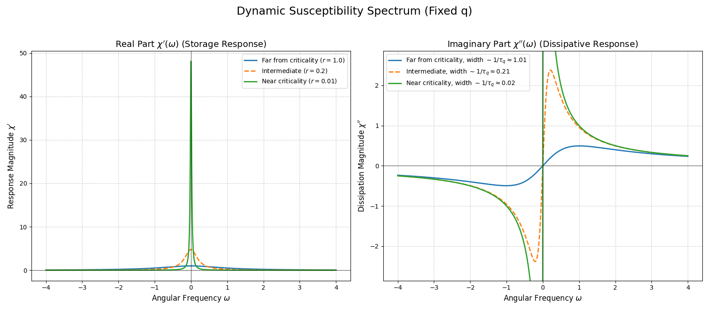
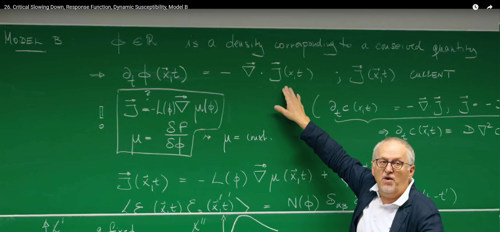

Introduction¶
In the previous lecture we used the powerful Ginzburg–Landau (GL) theory to draw a static free‑energy landscape: through gradient dynamics a system slides into and rests in the valleys of that landscape. This led to Model A, which successfully describes the static properties of systems near equilibrium.
A fundamental question remains: how fast does the system go downhill? In this lecture, we shift focus from whether a system reaches equilibrium to how and how fast it approaches it. We analyze the temporal aspects of fluctuations, especially near the critical point where the free‑energy landscape becomes anomalously flat. This reveals one of the most striking dynamical features of critical phenomena: critical slowing down.
We then introduce a powerful analysis toolkit—response functions and the dynamic susceptibility—to actively probe these dynamics. This exposes a deep unity: how spontaneous fluctuations and dissipative response are tied together by the fluctuation–dissipation theorem.
Finally, we introduce a new dynamical class—Model B—which describes systems whose order parameter is conserved. This prepares us to understand transport, phase separation, and pattern formation.
1. Model A Dynamics and Critical Slowing Down¶
Model A gave us a static "free-energy landscape map." Although this picture successfully predicts the equilibrium phases of the system at different temperatures, it is itself static. Now, we will inject the dimension of time into this static picture and explore how the system dynamically evolves on this landscape. We will start from the most fundamental question: how fast does a fluctuation that strays from the equilibrium "valley" decay back? The exploration of this question will lead us to discover a universal dynamical phenomenon near the critical point—critical slowing down.
1.1 Review of the Equation of Motion¶
Starting from Model A’s Langevin equation, in a mean‑field (Gaussian) approximation we neglect the quartic term in the free energy and keep only quadratic contributions. The linearized dynamics for fluctuations of the order parameter \(\phi\) in Fourier space reads
- Left‑hand side \(\partial_t\phi(\mathbf{q}, t)\): the time rate of change of the mode with wavevector \(\mathbf{q}\) (spatial scale \(\lambda \sim 1/|\mathbf{q}|\)).
- Restoring term \(-L(r+cq^2)\phi(\mathbf{q}, t)\): the deterministic restoring force driving the system back to equilibrium.
- \(L\) is the Onsager kinetic coefficient setting the overall time scale of relaxation, measuring the speed at which the system "slides down."
- The factor \((r+cq^2)\) is the inverse of the static correlation (up to \(T\)), \(\langle \phi(\mathbf{q})\phi(-\mathbf{q})\rangle_0 = T/(r+cq^2)\). Thus strongly correlated static modes (small denominator) feel a weaker restoring force dynamically.
- External driving \(L h(\mathbf{q}, t)\): coupling of an external field \(h\) conjugate to \(\phi\) (e.g., magnetic field for magnetization).
- Thermal noise \(\xi(\mathbf{q}, t)\): spatiotemporal Gaussian white noise from the heat bath with strength fixed by FDT, \(\langle \xi(\mathbf{q}, t)\xi(\mathbf{q}', t')\rangle = 2LT (2\pi)^d \delta(\mathbf{q}+\mathbf{q}')\delta(t-t')\).
1.2 Characteristic Relaxation Time \(\tau_q\)¶
To understand the intrinsic dynamics of the system, i.e., the system's own "personality," we need to strip away external interference. For this purpose, we examine how a fluctuation decays on its own in the absence of external fields (\(h=0\)) and ignoring instantaneous noise (or, performing ensemble averaging over noise, \(\langle\xi\rangle=0\)). In this case, the evolution of the average \(\langle\phi(\mathbf{q},t)\rangle\) follows a purely deterministic equation:
This is a standard first-order linear ordinary differential equation, whose solution is the familiar exponential decay form:
where we have defined the characteristic relaxation time \(\tau_q\) for the mode with wavevector \(\mathbf{q}\):
The physical meaning of this \(\tau_q\) is very intuitive: it is the characteristic time required for a fluctuation mode with wavevector \(\mathbf{q}\) to relax from a non-equilibrium state back to equilibrium. The longer \(\tau_q\) is, the more persistent the "memory" of that mode and the slower its decay.
1.3 Physical Content of Critical Slowing Down¶
Now we reach the first core of this lecture. Let us examine what dramatic changes occur in this relaxation time when the system approaches the critical point. The critical point is marked by \(r \to 0\). From the expression for \(\tau_q\), we can clearly see:
When \(r \to 0\) (approaching the critical temperature) and \(\mathbf{q} \to 0\) (considering macroscopic large-scale fluctuations), \(\tau_q \to \infty\)!
This divergence of relaxation times near the critical point is what is called critical slowing down. Its physical origin can be deeply understood directly from the free-energy landscape we established earlier:
-
Role of parameter \(r\) (flattening of the landscape): The parameter \(r \propto (T-T_c)\) measures the distance of the system from the critical temperature \(T_c\). When \(r \to 0\), the system approaches \(T_c\), and the free-energy landscape \(f(\phi) = \frac{r}{2}\phi^2 + \dots\) loses its curvature (quadratic coefficient) around the origin, becoming extremely flat. On a flat potential surface, the system is almost unaffected by restoring forces, so after being disturbed by thermal fluctuations, it takes an extremely long time to "roll back" to the equilibrium position.
-
Role of parameter \(\mathbf{q}\) (low cost of large-scale fluctuations): The wavevector \(\mathbf{q}\) reflects the spatial scale of fluctuations, i.e., \(\lambda \sim 1/|\mathbf{q}|\). When \(\mathbf{q} \to 0\), we are considering fluctuations with extremely long wavelengths and very large spatial scales. The \(c|\mathbf{q}|^2\) term represents the energy cost of creating spatial gradients (i.e., inhomogeneity of the order parameter). For gentle large-scale fluctuations, this energy cost is very small.
-
Combined effect: At the critical point (\(r=0\)), the restoring force for long-wavelength fluctuations (\(\mathbf{q} \to 0\)) completely disappears, leading to diverging relaxation times. The system's dynamics appears to be "frozen," and its response to perturbations becomes infinitely slow.
This "slowing down" is not just a simple divergence; it follows a universal scaling law. In dynamic critical phenomena theory, people define a universal dynamic critical exponent \(z\) that describes the scaling relationship between the characteristic relaxation time \(\tau_\xi\) and the correlation length \(\xi\): \(\tau_\xi \sim \xi^z\). In our mean-field Model A, the correlation length \(\xi \sim r^{-1/2}\). For modes comparable to the correlation scale, with wavevector \(q \sim 1/\xi\), the relaxation time is \(\tau_\xi \approx \frac{1}{L(r+c\xi^{-2})} \sim \frac{1}{L(r+cr)} \sim r^{-1}\). Substituting \(\xi \sim r^{-1/2}\), we get \(\tau_\xi \sim (\xi^{-2})^{-1} = \xi^2\). Therefore, for Model A, the dynamic critical exponent is \(z=2\). This shows that critical slowing down is a profound universal phenomenon with specific power-law behavior.
The concept of critical slowing down originated from observations of "critical opalescence" phenomena in liquid-gas phase transitions in the 19th century and was formally proposed by Belgian physicist Léon Van Hove in 1954, who predicted that when a system approaches the critical point, its dynamics would slow down dramatically. Its physical essence lies in the fact that when a system infinitely approaches the critical point of a continuous phase transition, its corresponding free-energy landscape becomes anomalously flat, causing the restoring force that pulls the system back from fluctuations to equilibrium to almost disappear. Therefore, the internal fluctuations of the system can form macroscopic-scale long-range correlations in space (i.e., diverging correlation length), and these huge, interconnected fluctuations require extremely long time to dissipate, ultimately making the system's relaxation time tend to infinity. This profound physical phenomenon is not only a fundamental feature in condensed matter physics, but is now widely used as a universal "early warning signal" to predict critical transitions or "tipping points" in complex systems such as climate patterns, ecosystem stability, and even financial markets.
1.4 Python Simulation: Visualizing Critical Slowing Down¶
We illustrate this with a microscopic model: the 2D Ising model, a classic realization of Model A. Using a Monte Carlo quench from a random high‑temperature state, we compare evolution far below and near \(T_c\).
import numpy as np
import matplotlib.pyplot as plt
import matplotlib.animation as animation
# --- 1. Simulation Parameters ---
N = 100 # Lattice size (N x N)
# Critical temperature for 2D Ising model
Tc = 2 / np.log(1 + np.sqrt(2)) # ~2.269
# We will compare two scenarios
T_far = 1.5 # Temperature far below Tc (fast relaxation)
T_near = 2.3 # Temperature very close to Tc (critical slowing down)
n_frames = 200 # Number of frames in the animation
mc_steps_per_frame = 10 # Monte Carlo steps between each frame
# --- 2. Core Ising Model Functions ---
def initial_state(N):
"""Generates a random spin configuration."""
return np.random.choice([-1, 1], size=(N, N))
def metropolis_step(config, T):
"""Performs one Monte Carlo step using the Metropolis algorithm."""
for _ in range(N * N):
# 1. Pick a random spin
x, y = np.random.randint(0, N, size=2)
spin = config[x, y]
# 2. Calculate energy change if flipped
# Periodic boundary conditions are used here
neighbors = config[(x+1)%N, y] + config[x, (y+1)%N] + \
config[(x-1+N)%N, y] + config[x, (y-1+N)%N]
delta_E = 2 * spin * neighbors # J=1, k_B=1
# 3. Flip spin based on Metropolis criterion
if delta_E < 0 or np.random.rand() < np.exp(-delta_E / T):
config[x, y] = -spin
return config
# --- 3. Setup the Animation ---
fig, (ax1, ax2) = plt.subplots(1, 2, figsize=(12, 6))
# Initialize two separate spin configurations
config_far = initial_state(N)
config_near = config_far.copy() # Start from the exact same random state
# Setup for the "Far from Tc" plot
ax1.set_title(f'Far from Critical Point: T = {T_far:.2f} < Tc')
im1 = ax1.imshow(config_far, cmap='binary', animated=True)
ax1.set_xticks([])
ax1.set_yticks([])
# Setup for the "Near Tc" plot
ax2.set_title(f'Near Critical Point: T = {T_near:.2f} ≈ Tc')
im2 = ax2.imshow(config_near, cmap='binary', animated=True)
ax2.set_xticks([])
ax2.set_yticks([])
fig.suptitle('Ising Model Quench: Visualizing Critical Slowing Down', fontsize=16)
# --- 4. Animation Update Function ---
def update(frame):
"""This function is called for each frame of the animation."""
global config_far, config_near
# Perform Monte Carlo steps for both systems
for _ in range(mc_steps_per_frame):
config_far = metropolis_step(config_far, T_far)
config_near = metropolis_step(config_near, T_near)
# Update the plots
im1.set_data(config_far)
im2.set_data(config_near)
# Print progress
if (frame + 1) % 20 == 0:
print(f'Animating frame {frame + 1}/{n_frames}...')
return im1, im2
# --- 5. Create and Save the Animation ---
print("Generating animation... this may take a minute.")
ani = animation.FuncAnimation(
fig, update, frames=n_frames, interval=50, blit=True, repeat=True
)
# Save the animation to a file instead of showing it
ani.save('critical_slowing_down.gif', writer='pillow', fps=10)
print("Animation saved as 'critical_slowing_down.gif'")

- Far from criticality, \(T<T_c\): starting from random “snow” the system rapidly self‑organizes. Small domains quickly merge into large ones; dynamics soon settles, with interfaces slowly straightening. This is fast relaxation.
- Near criticality, \(T\approx T_c\): evolution is extremely slow. Domains form, merge, and break up across all scales; the pattern flickers and remains disordered for a long time. This is direct visual evidence of critical slowing down.
2. System Response and the Dynamic Susceptibility \(\chi(q,\omega)\)¶
In the previous subsection, we passively "observed" how a system spontaneously recovers from perturbations. This is like watching a pendulum slowly come to rest on its own. But to truly understand the characteristics of this pendulum (such as its natural frequency and damping), a more active and powerful method is to "push" it and see how it responds.
In this section, we will play the role of "experimental physicists." We no longer wait passively, but actively use a tiny, periodically varying external "probe" (external field) to "perturb" the system, then carefully listen to its response. By analyzing how the system responds to this probe, we will be able to reveal its intrinsic dynamical characteristics with unprecedented depth. The mathematical description of this "response" is the core physical quantity to be introduced in this lecture—the dynamic susceptibility.
2.1 Probing in the Frequency Domain: A “Spectrum” of Dynamics¶
When we study the system's spontaneous relaxation, we focus on time \(t\). But to study the system's response to a periodic probe, the most natural language is not the time domain, but the frequency domain. This is like in music, where we not only care about when a note sounds, but more importantly about its pitch (frequency).
Our "probe" is a tiny external field \(h(\mathbf{x}, t)\) that varies periodically in both space and time. Through Fourier transformation, any complex spatiotemporal variation can be decomposed into a superposition of a series of simple plane waves. We take only one component to study: \(h(\mathbf{q}, t) = h_0 e^{-i\omega t}\).
- \(\mathbf{q}\) is the wavevector, determining the spatial periodicity of the probe (\(\lambda \sim 1/|\mathbf{q}|\)).
- \(\omega\) is the angular frequency, determining the temporal periodicity of the probe (\(T \sim 1/\omega\)).
To analyze the system's response \(\phi(\mathbf{q}, t)\), we also perform a temporal Fourier transform on it to get \(\phi(\mathbf{q}, \omega)\):
The power of this transformation lies in the fact that it decomposes a complex dynamical problem that evolves with time into a series of simple algebraic problems at different frequencies \(\omega\). The time derivative \(\partial_t\) is replaced by a simple multiplication factor \(-i\omega\) in the frequency domain. This makes solving extremely simple, and more importantly, it allows us to see how the system selectively responds to different frequency "pitches," thus drawing the system's dynamical "spectrum".
2.2 Deriving the Dynamic Susceptibility: A Transfer Function¶
We apply Fourier transformation to each term of Model A's linearized equation of motion:
We are interested in the system's average response to the external field, so we take the ensemble average \(\langle\ldots\rangle\) of the above equation. Since the thermal noise has zero mean, \(\langle\xi(\mathbf{q},\omega)\rangle=0\), the noise term disappears. What remains is a purely algebraic equation:
Rearranging and moving all terms containing \(\langle\phi\rangle\) to the left side, we can solve for the relationship between output (system response \(\langle\phi\rangle\)) and input (external probe \(h\)):
This proportionality coefficient is defined in physics as the dynamic susceptibility, denoted \(\chi(\mathbf{q},\omega)\). In engineering, it is the system's "transfer function". It precisely tells us how the system "filters" or "transforms" an input of a specific spatiotemporal frequency.
Using the relaxation time \(\tau_q = \frac{1}{L(r+c|\mathbf{q}|^2)}\) we defined in the first part, the above equation can be written in a more compact form with clearer physical meaning:
2.3 Static Limit: Bridging Dynamics and Statics¶
At \(\omega=0\),
recovering the static susceptibility/Ornstein–Zernike form. The dynamic theory is self‑consistent.
2.4 Physical Meaning of \(\chi'\) and \(\chi''\): Storage and Dissipation¶

Since \(\chi\) is complex, the response is phase‑shifted relative to the drive. Rationalizing the denominator gives
- Real part \(\chi'\) (storage/elastic): in‑phase response, no net energy loss, reversible exchange with the field.
- Imaginary part \(\chi''\) (dissipative/absorptive): \(90^\circ\) out‑of‑phase response, measures energy absorption and irreversible loss (friction‑like processes).
Spectral signature of critical slowing down: as \(r\) decreases, the \(\chi'\) peak at \(\omega=0\) sharpens and grows; the \(\chi''\) spectrum narrows with width \(\sim 1/\tau_q\), reflecting rapidly increasing \(\tau_q\). Near criticality the system responds only to very low frequencies.
2.5 Python Visualization: Spectral Anatomy of the Dynamic Response¶
import numpy as np
import matplotlib.pyplot as plt
# --- 1. Model Parameters ---
L = 1.0
c = 1.0
q_fixed = 0.1 # We fix the wavevector q as shown on the blackboard
# --- Define three scenarios to show the transition ---
r_far = 1.0 # Far from critical point (gentle curve)
r_inter = 0.2 # Intermediate case
r_near = 0.01 # Very near critical point (sharp peak)
# --- Calculate the corresponding relaxation times ---
tau_q_far = 1.0 / (L * (r_far + c * q_fixed**2))
tau_q_inter = 1.0 / (L * (r_inter + c * q_fixed**2))
tau_q_near = 1.0 / (L * (r_near + c * q_fixed**2))
# Setup the frequency omega range
omega = np.linspace(-4, 4, 1000)
# --- 2. Define functions for chi' and chi'' ---
def chi_prime(omega, L, tau_q):
"""Calculates the real part of the dynamic susceptibility."""
return (L * tau_q) / (1 + (omega * tau_q)**2)
def chi_double_prime(omega, L, tau_q):
"""Calculates the imaginary part of the dynamic susceptibility."""
return (L * omega * tau_q**2) / (1 + (omega * tau_q)**2)
# --- 3. Calculate data for all scenarios ---
chi_p_far = chi_prime(omega, L, tau_q_far)
chi_pp_far = chi_double_prime(omega, L, tau_q_far)
chi_p_inter = chi_prime(omega, L, tau_q_inter)
chi_pp_inter = chi_double_prime(omega, L, tau_q_inter)
chi_p_near = chi_prime(omega, L, tau_q_near)
chi_pp_near = chi_double_prime(omega, L, tau_q_near)
# --- 4. Visualization (replicating the blackboard concept) ---
fig, (ax1, ax2) = plt.subplots(1, 2, figsize=(16, 7))
fig.suptitle('Dynamic Susceptibility Spectrum (Fixed q)', fontsize=18)
# --- Plot for chi' (Real Part - Storage Response) ---
ax1.plot(omega, chi_p_far, label=f'Far from criticality ($r={r_far}$)', lw=2)
ax1.plot(omega, chi_p_inter, label=f'Intermediate ($r={r_inter}$)', lw=2, linestyle='--')
ax1.plot(omega, chi_p_near, label=f'Near criticality ($r={r_near}$)', lw=2)
ax1.set_title(r"Real Part $\chi'(\omega)$ (Storage Response)", fontsize=14)
ax1.set_xlabel(r'Angular Frequency $\omega$', fontsize=12)
ax1.set_ylabel(r"Response Magnitude $\chi'$", fontsize=12)
ax1.grid(True, linestyle='--', alpha=0.6)
ax1.legend()
ax1.axhline(0, color='black', lw=0.5)
ax1.axvline(0, color='black', lw=0.5)
# --- Plot for chi'' (Imaginary Part - Dissipative Response) ---
ax2.plot(omega, chi_pp_far, label=f'Far from criticality, width $\sim 1/\\tau_q \\approx {1/tau_q_far:.2f}$', lw=2)
ax2.plot(omega, chi_pp_inter, label=f'Intermediate, width $\sim 1/\\tau_q \\approx {1/tau_q_inter:.2f}$', lw=2, linestyle='--')
ax2.plot(omega, chi_pp_near, label=f'Near criticality, width $\sim 1/\\tau_q \\approx {1/tau_q_near:.2f}$', lw=2)
ax2.set_title(r"Imaginary Part $\chi''(\omega)$ (Dissipative Response)", fontsize=14)
ax2.set_xlabel(r'Angular Frequency $\omega$', fontsize=12)
ax2.set_ylabel(r"Dissipation Magnitude $\chi''$", fontsize=12)
ax2.grid(True, linestyle='--', alpha=0.6)
ax2.legend()
ax2.axhline(0, color='black', lw=0.5)
ax2.axvline(0, color='black', lw=0.5)
# Set a symmetric y-limit for the chi'' plot to better see the change in width
max_y_val = np.max(chi_pp_inter) * 1.2
ax2.set_ylim(-max_y_val, max_y_val)
plt.tight_layout(rect=[0, 0, 1, 0.95])
plt.show()

- Left (Real Part \(\chi'(\omega)\), storage): symmetric bell curve peaking at \(\omega=0\). As \(r\) decreases the peak height grows and narrows—stronger sensitivity to quasi‑static perturbations.
- Right (Imaginary Part \(\chi''(\omega)\), dissipation): odd S‑shaped curve with a characteristic width \(\sim 1/\tau_q\). As \(r\) decreases the spectrum collapses toward \(\omega=0\), indicating rapidly growing \(\tau_q\) and vanishing ability to dissipate at high frequency.
3. Fluctuation–Dissipation Theorem¶
In the previous subsection, we successfully drew the "spectral fingerprint" \(\chi(q, \omega)\) of the system's dynamical response by applying an external "probe" \(h(q, \omega)\). We understood that its imaginary part \(\chi''\) is a measure of the system's ability to dissipate energy.
Now, we enter the theoretical core of this lecture. We will turn off all external probes (\(h=0\)) and let the system return to a pure thermal equilibrium state. In this state, the system is not static, but due to continuous energy exchange with the heat bath, it is filled with incessant, spontaneous thermal fluctuations. Our task is to establish a mathematical description for these intrinsic, random energy exchanges, i.e., the dynamical correlation function \(C(q, \omega)\).
Finally, we will prove that the system's intrinsic "fluctuations" in its passive state and its "dissipative" response in its active state are not isolated phenomena, but are closely connected by a profound physical principle—the Fluctuation-Dissipation Theorem (FDT).
3.1 Dynamical Correlation \(C(q,\omega)\): Power Spectrum of Fluctuations¶
Our starting point is still Model A's linearized Langevin equation, but this time with the external field \(h=0\). In the frequency domain, it becomes:
Solving for \(\phi(q,\omega)\), we get:
The physical picture of this equation is extremely clear:
- Input (Source): \(\xi(q,\omega)\) is the most primitive Gaussian white noise from the heat bath. The term "white" means its power is uniform across all frequencies, just like white light contains all colors of light.
- Filter: \(G_0(q,\omega)\) is the response function we defined earlier. Here, it plays the role of the system's own "filter."
- Output: \(\phi(q,\omega)\) is the order parameter fluctuations we can observe macroscopically. It is no longer "white," but "colored" noise filtered through the system's own dynamical characteristics (described by \(G_0\)). The system amplifies noise at certain frequencies (near resonance frequencies) while suppressing noise at other frequencies.
Thus \(\xi\) is the white‑noise input, \(G_0\) the system’s filter (response function), and \(\phi\) the colored‑noise output. Define
Using \(G_0(-q,-\omega)=G_0^*(q,\omega)\) and
we obtain
3.2 Linking Fluctuations and Dissipation¶

From Section 2,
Comparing with \(C_{\phi\phi}\) gives the compact FDT relation
Thus the spectrum of spontaneous equilibrium fluctuations and the dissipative part of the driven response are two faces of the same microscopic processes, with temperature setting the scale.
3.3 Meaning and Use of FDT¶
- Left side \(C(q,\omega)\): power spectrum of spontaneous thermal fluctuations in equilibrium.
- Right side \(\chi''(q,\omega)\): energy absorption and irreversible loss under external driving.
FDT enables inferring one from the other: measure dissipative response to reconstruct equilibrium fluctuation spectra, and vice versa.
Summary table¶
| Feature | Correlator \(C(q,\omega)\) | Imaginary Part \(\chi''(q,\omega)\) |
|---|---|---|
| Physical situation | Spontaneous equilibrium fluctuations (\(h=0\)) | Response to external perturbations (\(h\neq 0\)) |
| Describes | Power spectrum of thermal fluctuations (listening) | Energy dissipation and phase lag (driving) |
| Proportional to | Temperature \(T\) | Kinetic coefficient \(L\) |
| FDT link | \(C(q,\omega)=\dfrac{2T}{\omega}\,\chi''(q,\omega)\) | \(\chi''(q,\omega)=\dfrac{\omega}{2T}\,C(q,\omega)\) |
| Physical essence | Microscopic jitter intrinsic to the system | Macroscopic friction/resistance under driving |
4. Model B: Transport and Phase Separation Under Conservation¶
So far, we have deeply analyzed Model A. Its core is a local relaxation dynamics: at each point on the free-energy landscape, the system tries to independently "slide" toward the valley. This perfectly describes a non-conserved order parameter, such as spins in a magnet, where a local spin can exchange energy and angular momentum with the lattice, thus flipping on its own, without needing to consider that another spin far away must flip in the opposite direction.
However, many more common phase transitions in nature occur in systems where the order parameter is conserved. Imagine a cup of uniformly mixed oil and water. When it starts to separate, oil molecules cannot disappear out of thin air at point A and then appear at point B. They must physically flow through every intermediate point. This constraint that matter cannot be created or destroyed out of thin air, i.e., the conservation law, imposes the strongest "shackles" on the system's dynamics.
To describe such processes, we need a completely new dynamical framework. This framework is no longer based on local "creation" and "annihilation," but on the "transport" and "current" of matter. This is the core idea of Model B.
4.1 Physical Motivation: Conserved Order Parameter¶
For a conserved scalar field \(\phi\) (e.g., density difference in a binary mixture), dynamics must obey a continuity equation \(\partial_t\phi + \nabla\cdot \mathbf{J}=0\).
4.2 Continuity Equation: Mathematical Embodiment of Conservation Laws¶
The dynamics of any conserved quantity must unconditionally follow the continuity equation. This is the most direct mathematical translation of conservation laws:
The physical picture of this equation is very intuitive, like the change in water level in a bathtub:
- \(\frac{\partial \phi}{\partial t}\): the rate of change of water level (density \(\phi\)) in the bathtub.
- \(\mathbf{J}\): the water flow (current \(\mathbf{J}\)) flowing in through the faucet or flowing out through the drain.
- \(-\nabla \cdot \mathbf{J}\): the net inflow (negative divergence of the current) after subtracting outflow from inflow.
The equation shows that any change in local density must be explained by a current passing through the boundary of that region. Therefore, the problem of constructing the dynamics of a conserved system is completely transformed into a core task: establishing a physically reasonable expression for this current \(\mathbf{J}\).
4.3 Constructing the Particle Current \(\mathbf{J}\): Gradient of Chemical Potential¶
What is the fundamental thermodynamic "force" that drives particle flow? The answer is the gradient of chemical potential \(\mu\). The chemical potential \(\mu = \frac{\delta F}{\delta \phi}\) can be understood as the free energy required to add a particle to a certain location in the system, measuring the "crowding degree" of particles locally. The system will spontaneously transport particles from regions of high chemical potential (crowded) to regions of low chemical potential (sparse) to minimize the total free energy \(F\). In the final equilibrium state, the chemical potential is equal everywhere in the system, \(\mu = \text{const.}\), and all macroscopic particle flows stop.

Therefore, the deterministic part of the current is proportional to the gradient of chemical potential:
Here \(L(\phi)\) is an Onsager kinetic coefficient proportional to the particle mobility.
Like Model A, a system at finite temperature must have thermal fluctuations. For conserved systems, this fluctuation manifests as a random fluctuation current \(\boldsymbol{\xi}_J\). According to the fluctuation-dissipation theorem, the strength of this random current is directly related to the mobility \(L(\phi)\) and temperature \(T\). The total current expression is:
where the correlation properties of the fluctuation current are:
4.4 Final Form and Physical Content of Model B¶
Substituting the complete expression for the current \(\mathbf{J}\) into the continuity equation, we obtain the general form of Model B, also known as the stochastic Cahn-Hilliard equation:
To see the profound changes brought by conservation laws, let us again use the Ginzburg-Landau free energy and compare the deterministic parts of Model A and Model B:
Using the GL functional, \(\mu = r\phi + u\phi^3 - c\nabla^2\phi\). In the Gaussian/linear regime (\(u\to 0\)), \(\mu \approx r\phi - c\nabla^2\phi\).
Combining \(\partial_t\phi + \nabla\cdot\mathbf{J}=0\) with \(\mathbf{J}=-L\nabla\mu\) gives
Key contrasts with Model A (deterministic parts, Gaussian limit):
| Feature | Model A (Non‑conserved) | Model B (Conserved) |
|---|---|---|
| Core physics | Local relaxation | Mass transport |
| Basic form | \(\partial_t\phi = -L\,\delta F/\delta\phi\) | \(\partial_t\phi = \nabla\cdot(L\,\nabla\,\delta F/\delta\phi)\) |
| GL (linear) | \(\partial_t\phi = -L(r\phi - c\nabla^2\phi)\) | \(\partial_t\phi = Lr\nabla^2\phi - Lc\nabla^4\phi\) |
| Relaxation rate | \(1/\tau_q \sim L(r+cq^2)\) | \(1/\tau_q \sim L q^2(r+cq^2)\) |
Consequences:
1) Extra gradients: conservation introduces two additional gradients. The rate of change is set by the convergence of a current driven by \(\nabla\mu\).
2) \(q^2\) factor: in Fourier space each gradient gives \(iq\), so Model B picks up an extra \(q^2\) in the relaxation rate. Thus the \(q=0\) mode never decays (global conservation), and relaxation occurs only for \(q>0\) via redistribution.
3) Phase separation and spinodal decomposition: after a quench to \(r<0\), the \(Lr\nabla^2\phi\) term is negative diffusion—amplifying small fluctuations (uphill diffusion). The stabilizing \(-Lc\nabla^4\phi\) term selects a characteristic scale. This drives spinodal decomposition, beyond the scope of Model A.
Conclusion: From Relaxation to Transport—A Bridge to Hydrodynamics¶
This lecture is not only a dynamic extension of Lecture 25's static phase transition theory, but also a perfect demonstration of how we apply the abstract Onsager theory and fluctuation-dissipation principles from Lecture 24 to a specific physical model.
-
We first deeply analyzed the dynamics of Model A, theoretically revealing and visually seeing the profound phenomenon of critical slowing down. We found that when the system approaches the critical point, its free-energy landscape becomes anomalously flat, causing the system's intrinsic relaxation time to diverge. This is the direct temporal manifestation of static theory (diverging correlation length).
-
Next, we introduced the powerful tool of dynamic susceptibility \(\chi(q,\omega)\). By actively "probing" the system, we found that the "fingerprint" of critical slowing down in the frequency domain is the infinite sharpening of the dissipation spectral peak. This gave us another perspective on how the system loses its ability to respond to fast, local perturbations at the critical point.
-
By comparing the system's intrinsic fluctuations with its external response, we derived the fluctuation-dissipation theorem for this specific model. This is no longer just an abstract principle from Lecture 24, but a practical formula connecting specific physical quantities (correlation function C and response function \(\chi''\)), perfectly confirming the profound idea that "fluctuations" and "dissipation" originate from the same microscopic processes.
-
Finally, by introducing the fundamental constraint of conservation laws, we completed the crucial transition from Model A to Model B. We revealed how conservation laws fundamentally change the structure of dynamical equations: they transform local, non-conserved relaxation processes (Model A) into non-local, conserved transport processes (Model B). The extra \(q^2\) factor in the relaxation rate is the mathematical imprint of the physical reality that "matter cannot disappear out of thin air, but can only be redistributed through flow."
The distinction between Model A and Model B is not just the difference between two models; it represents the two most fundamental ways of thinking in nonequilibrium dynamics. It provides the most core theoretical framework for understanding the diverse phase transitions and pattern formation phenomena in nature.
Our study of Model B—this simplest single scalar conserved field dynamical model—is a bridge to broader fields. In the next lecture, we will extend the idea of "conservation" to the most important set of conserved quantities in the physical world: mass, momentum, and energy. The study of the dynamics of these conserved quantities is the core of hydrodynamics. We will start from the simplest case—frictionless ideal fluid—and derive one of the cornerstone equations of hydrodynamics: the Euler Equation.